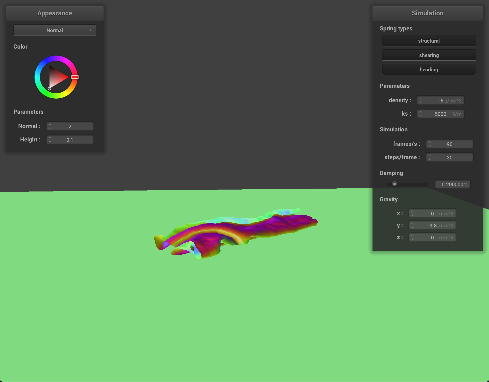

CS 184: Computer Graphics and Imaging, Spring 2022
Project 4: Clothsim
Mantej Panesar, Sean Sananikone
Overview
In this project, we implemented a real-time simuation of a cloth using a mass and spring system.
Specifically, we built the grid containing the masses and springs, applied numerical integration to simulate movement, implemented collisions with itself and other objects (sphere and plane), and various shaders.
This project was very interesting to implement because it involved real-time simulation renders, whereas the previous projects were focused on static scene renders.
Also, it was interesting to learn more of the technical aspects behind how a given mesh/grid is updated over time to mimic realistic movements.
Part 1: Masses and Springs
In this part, we implemented the mass and spring based system to represent the cloth by modifying Cloth::buildGrid(...).
In particular, we first built the cloth with evenly spaced out point masses which spanned the provided height and width for the cloth and stored the point masses in point_masses in row-major order.
We also leveraged pinned in order to toggle the boolean indicating whether a point mass should be pinned in the grid or not.
Next, we implemented structural, shearing, and bending constraints (as specified on the spec), which are represented by springs, in order to be able to model cloth movements in later parts of the project during simulations.
To make the code more readable and concise, we implemented various helper functions.
One of the helper functions was Cloth::isValidGridIndex(...) which would check whether the provided indices were valid given the grid provided.
This was particularly helpful in being able to handle edge cases when adding constraints between a current point mass and surrounding point masses.
The remaining helper functions were Cloth::addStructuralSprings(...), Cloth::addShearingSprings(...), and Cloth::addBendingSprings(...) would accordingly invoke Cloth:isValidGridIndex(...) and add the respective contraints.
While implementing this part, we ran into two main bugs that caused our implementation to behave erroneously later on in the project.
Initially, the grid was not actually being stored in row major order. We were able to identify this error when implementing Part 2, as the normal coloring of the cloth seemed to be inverted.
Updating how the grid was stored (flipping the order of our loops and fixing our indexing) resolved the issue and the normal coloring of the cloth in Part 2 adhered to what was expected as seen on the spec.
Second, when calculating the random offset for the z-coordinate, we scaled the rand() value by RAND_MAX to obtain a unit interval [0, 1] which we would then transform to [-1/1000, 1/1000], however, this was implicitly casted to an integer, which meant that the offset was actually not random (rather deterministic).
Fixing this issue allowed the cloth to behave properly whne we implemented self-collisions in Part 4.
The following images highlight the structure of the grid in the pinned2.json scene:
pinned2.json
Overall grid structure.
|
pinned2.json
Overall grid structure (closeup).
|
pinned2.json
Grid with no shearing constraints.
|
pinned2.json
Grid with no shearing constraints (closeup).
|
 pinned2.json
pinned2.json
Grid with only shearing constraints.
|
pinned2.json
Grid with only shearing constraints (closeup).
|
pinned2.json
Grid with all constraints.
|
pinned2.json
Grid with all constraints (closeup).
|
Part 2: Simulation via numerical integration
In this part, we modified Cloth::simulate(...) in order to implement physical equations of motion to apply forces on the cloth's point masses to model its movement across time.
First, we computed the total external forces acting on each point mass by accumulating the external_accelerations in accumulated_a and then setting each point masses forces field to mass * accumulated_a.
Next, we applied spring correction forces on point masses using Hooke's Law (as given on the spec).
Moreover, we also checked which constraints were enabled at the time when calculating and applying the spring correction forces and also ensured that the bending constraint was weaker than the structural and shearing constraints (we scaled ks as specified on spec).
The two point masses defining a spring were accordingly updated with equal but opposite forces given Hooke's Law.
Next, we implemented Verlet integration to compute the new point mass positions.
In particular, we used Verlet integration because it is an explicit integrator.
We defined the position of the point masses as follows: xt + dt = xt + (1 - d) * (xt - xt - dt) + at * dt2, where d = cp->damping / 100.0 and at = pm.forces / mass.
This formula was used to update the point mass's position and last_position.
In order to ensure our simulation of the cloth's movement is realistic, we constrained the position updates for the point masses according to SIGGRAPH 1995 Provot paper.
The research paper explains that each spring's length should never be greater than 10% of its original rest_length.
Therefore, the point masses positions were updated accordingly to ensure this constraint was satisfied.
In particular, if one point mass was pinned, then the entire correction would be applied to the non-pinned point mass. If both point masses were non-pinned, then the correction would be split across the two point masses (apply an equal correction to each).
TODO add writeup images (first bullet point and subpoints on delvierables) and explanation!
The following images showcase the cloth's resting position in the pinned4.json scene from two angles with the default GUI parameters.
pinned4.json
Final resting state (viewing angle 1)
|
pinned4.json
Final resting state (viewing angle 2)
|
Part 3: Handling collisions with other objects
In this part, we implemented collisions with other scene objects in order to make our scene renders and simulations more complex.
In particular, we implemented cloth collisions with spheres and planes, which called for modifying the following functions:
Sphere::collide(...)Plane::collide(...)Cloth::simulate(...)
In Sphere::collide(...), we found the direction vector from the origin of the sphere to the point mass: Vector3D origin_to_pos_dir = pm.position - origin.
Using this direction vector, we found its length in order to determine if the point mass's position is within the sphere.
Specifically, if radius - origin_to_pos_dir.norm() was greater than or equal to 0, then the point mass was within the sphere.
Therefore, we would calculated the tangent point by moving in the unit direction of origin_to_pos_dir scaled by the radius from the origin.
The correction vector was then calculated as the difference between the tangent point and the point mass's last position.
Finally, the point mass's position was updated to apply the correction vector scaled down by (1 - friction).
In Plane::collide(...), we used the point on the plane and the point mass's last_postion and position in order to determine whether the point mass crossed over the plane.
We accomplished this by computing Vector3D plane_to_last_pos_dir = pm.last_position - point; double prev = dot(plane_to_last_pos_dir, normal); and Vector3D plane_to_pos_dir = pm.position - point; double curr = dot(plane_to_pos_dir, normal);.
In particular, if the point mass crossed over the plane, we expect the sign of the product of prev and curr to be negative.
If the point mass crossed the plane, we executed the ray-plane intersection computation as discussed during the ray tracing lectures in class.
This allowed us to compute the tangent point on the plane surface.
We calculated the correction point using the tangent point and offsetting the position by SURFACE_OFFSET.
Finally, the point mass's position was updated to apply the correction vector scaled down by (1 - friction).
In Cloth::simulate(...), we iterate over all point masses and invoke collide(...) for each collision object in the scene with the point mass in question.
The main bugs that we ran into for this part was misunderstanding the direction of our vectors, specifically the correction vectors that we were applying to the point mass's last position.
Ultimately, after implementing this part, now our scenes can simulate the cloth's movement when it collides with other objects in the scene.
The following images showcase the shaded cloth's final resting state on the sphere in the sphere.json scene with varying ks values:
sphere.json
ks = 500
|
sphere.json
ks = 5000
|
sphere.json
ks = 50000
|
The spring constant ks controls how stiff the spring in question will be.
Given the mass and spring representation of the cloth, it follows that the stiffness of a spring will directly influence the movement of the cloth.
In particular, a higher value for ks will result in the cloth being more stiff, whereas a lower value for ks will result in the cloth being less stiff allowing the cloth to droop more easily and hang more freely.
This is evident in the provided images above.
When ks = 500, the cloth appeared to be droopier with more visible cloth wrinkles and creases.
When ks = 5000, the cloth appeared droopy but did not reach the level of the previous image (the cloth did not stretch as much) and there were not as many cloth wrinkles and creases.
When ks = 50000, the cloth appeared rigid, which explains why the cloth does not droop and lacks the cloth wrinkles seen in the earlier images.
The following image showcases the cloth lying at rest on the plane in the plane.json scene. In particular, the normal shading was utilized for this render:
plane.json
Cloth resting after plane collision
|
Part 4: Handling self-collisions
In this part, we further extended the collision behavior for the cloth, specifcally we implemented self-collisions for the cloth.
In order to do this, we modified the following functions:
Cloth::hash_position(...)Cloth::build_spatial_map(...)Cloth::self_collide(...)Cloth::simulate(...)
In Cloth::hash_position(...), we partitioned the 3D space into 3D boxes with the following dimensions: w * h * t, where w = 3 * width / num_width_points, h = 3 * height / num_height_points, and t = max(w, h).
Then, I truncated the provided position by finding the closest 3D box (I utilized w, h, t and the round(...) function).
Next, I used the Cantor Pairing function to generate a unique key that will be used when building the hash table.
The Cantor Pairing function takes in two inputs and will output a unique value given the value.
I calculated the result of the Cantor Pairing function given two coordinate dimensions, and then used that result and the third dimensions as inputs to the Cantor Pairing function to obtain the unique key.
In Cloth::build_spatial_map(...), I iterated over all the point masses and accordingly populated the hash table given the unique key generated from hash_position(...).
In Cloth::self_collide(...), I compared a given point mass against all candidate point masses (candidate point masses are the point masses under the same key in the hash table).
I checked if the given point mass and the candidate where within 2 * thickness distance. If they were, I computed a correction vector that would ensure that the given point mass would be updated such that the two point masses were 2 * thickness apart.
It is worth noting that the given point mass was not compared with itself.
Specfically, the given point mass was updated using the average of all the calculated correction vectors scaled by 1 / simulation_steps.
Finally, we updated Cloth::simulate(...) in order to invoke Cloth::build_spatial_map(...) and then call Cloth::self_collide(...) for each point mass.
The following images showcase the cloth self-colliding in the selfCollision.json scene with the default GUI parameters (ks = 5000 and density = 15).
selfCollision.json
Starting position
ks = 5000, density = 15
|
selfCollision.json
Intermediate position
ks = 5000, density = 15
|

selfCollision.json
Collapsed on plane
ks = 5000, density = 15
|
selfCollision.json
Resting position on plane
ks = 5000, density = 15
|
The following images showcase the cloth self-colliding in the selfCollisions.json scene with varying ks and density values.
It is worth noting that these images with varying ks and density values will be compared against the above suite of images which use the default GUI parameters.
Varying ks values:
selfCollision.json
Starting position
ks = 500, density = 15
|
selfCollision.json
Intermediate position
ks = 500, density = 15
|
selfCollision.json
Collapsed on plane
ks = 500, density = 15
|
selfCollision.json
Resting position on plane
ks = 500, density = 15
|
selfCollision.json
Starting position
ks = 50000, density = 15
|
selfCollision.json
Intermediate position
ks = 50000, density = 15
|
selfCollision.json
Collapsed on plane
ks = 50000, density = 15
|
selfCollision.json
Resting position on plane
ks = 50000, density = 15
|
As discussed earlier, varying the ks values will change how stiff the springs will be in the cloth simulation, which in turn would dictate the movement of the cloth.
When comparing the low and high ks images, it is evident that the lower ks value resulted in the cloth to be more fluid and less rigid (more "plyable"), whereas the large ks value images showcase how the cloth is more rigid and less willing to self collide.
Foremost, it is evident that there is less wrinkles (i.e. self-collision instances) when ks is lower when compared with a higher value.
This intuitively makes sense beacuse a weaker spring will allow the cloth to fall more freely, whereas a stronger spring will attempt to maintain the rigidity of the cloth as it falls.
Varying density values:
selfCollision.json
Starting position
ks = 5000, density = 1.5
|
selfCollision.json
Intermediate position
ks = 5000, density = 1.5
|
selfCollision.json
Collapsed on plane
ks = 5000, density = 1.5
|
 selfCollision.json
selfCollision.json
Resting position on plane
ks = 5000, density = 1.5
|
selfCollision.json
Starting position
ks = 5000, density = 150
|
selfCollision.json
Intermediate position
ks = 5000, density = 150
|
selfCollision.json
Collapsed on plane
ks = 5000, density = 150
|
selfCollision.json
Resting position on plane
ks = 5000, density = 150
|
When we take a look at the differening density levls we notice a change in how the simulation progresses.
While both starting positions seem the same, after the intial periods the images look different. Looking at the
image labeled intermediate position we see that the increase in density causes a lot more of the scrunching
of the cloth. This can especially be seen towards the bottom of the cloth. When the cloth collapses
on the plane the cloth continues to look more deformed and smashed into the plane, more so than the lower density
simulation. In the final resting position we see that the cloth looks much flatter in the higher density image
with the lower density image seeming to have some height between the plane and the highest point
of the cloth. This is expected as increasing the density will increase the mass of the simulated cloth
which will cause the simulation to flatten the cloth at a more drastic rate.
Part 5: Shaders
In this part, we implemented a variety of shaders: diffuse, Blinn-Phong, texture mapping, displacement and bump mapping, and environment-mapped reflections (mirror material).
TODO answer writeup deliverable about the vertex and fragment shader files
The Blinn-Phong shading model combines ambient lighting and specular reflection to the diffuse lighting to determine the overall lighting output.
The shading model is determined by the following formula: L = ka Ia + kd(I / r2) max(0, n · l) + ks(I / r2)max(0, n · h)p.
We also referenced the visual diagram provided during lecture for this formula when implementing the Blinn-Phong shading:
|
Blinn-Phong visual from Lecture 6 Slide 26
|
TODO add writeup images and explanation!
|
Custom Oski texture at start
|
Custom Oski texture after falling
|
Partner Collaboration
Working with a partner went well. We used the same approach as the previous project, where we assigned each person to be the "lead" on certain tasks.
Additionally, we continued our practice of commenting code/communicating well so that both partners would be on the same page when it comes to the implementation of the code.
In terms of coding, one way that we collaborated was through paired programming. We would work on one person's monitor with that
individual coding and the other partner helping by checking the specs/slides/piazza as well as helping debug. When we
didn't do that we would try to split up parts of the work in a divide and conquer fashion. We split up the task of the write-up
by making the individual who worked more on each part write out the explanations.
Project Webpage Link
Project 4 Webpage
https://cal-cs184-student.github.io/sp22-project-webpages-mantejpanesar/proj4/index.html